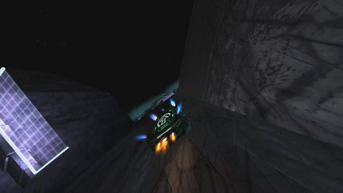
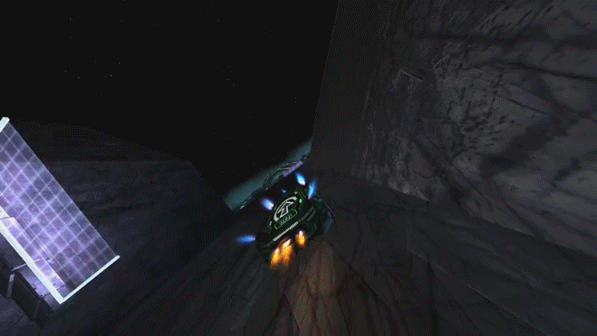

A Guide To Most Distance Mechanics
> Wings + Force Zone Interaction
Wings have a special interaction with force zones (force zones are things that push you, like boost rings or that purple river in the official level Liminal). Most of the time, if you use wings in a force zone, the force zone will make you go faster than it would if you were just gripflying through the force zone or driving through it.

Here are some other examples where it is used:


Here are some other examples where it is used:
